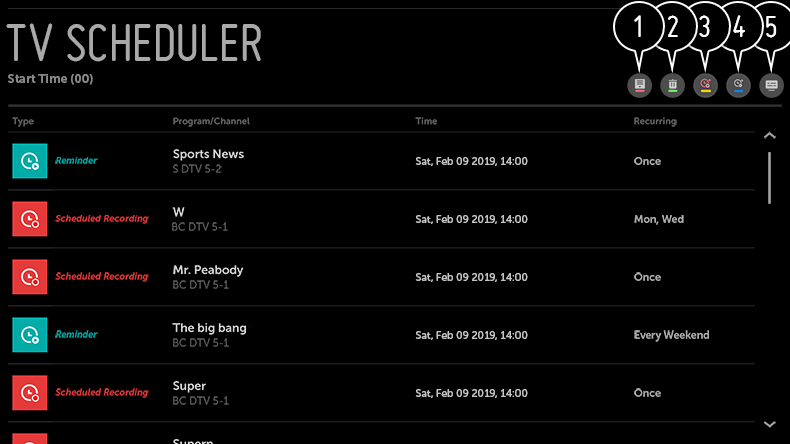

Uso de Programador
Puede introducir la fecha y hora de un programa para programar su visualización o grabación a la hora establecida.
- Pulse el botón del mando a distancia y seleccione la pestaña Programador de la parte izquierda de la pantalla.
- Seleccione la opción de la parte superior derecha.

- Es posible cambiar el orden de alineación o aplicar el filtro.
- permite establecer el modo de eliminación.
- permite programar una nueva grabación.
- permite establecer un nuevo recordatorio.
- Inicie Guía de TV.
Programación por programa
Puede seleccionar un programa para programar su visualización o su grabación.
- Pulse el botón del mando a distancia y seleccione la pestaña Guía de TV de la parte izquierda de la pantalla.
-
Seleccione el programa que desee.
Si desea grabar una retransmisión en directo, haga clic en el botón GRABAR o VER.
En el caso de un programa posterior, haga clic en el botón GRABACIÓN PROGRAMADA o RECORDATORIO.
La grabación programada no garantiza la grabación del programa de manera exacta, ya que la grabación se realizará según la información proporcionada por la cadena emisora.
se aplica a la retransmisión digital.
Programación manual
Puede seleccionar la fecha, la hora y el programa que desea ver o grabarlo.
- Pulse el botón del mando a distancia y seleccione la pestaña Programador de la parte izquierda de la pantalla.
- Seleccione la opción de la parte superior derecha.
- Seleccione la opción o en la parte superior derecha.
- Seleccione CREAR MANUALMENTE.
- Establezca la fecha, la hora y el canal para la grabación o visualización.
La duración de la grabación programada debe ser de al menos 1 minuto.
Grabación de una serie
La función de grabación de series se utiliza para grabar automáticamente cada episodio del programa que elija.
Si un programa forma parte de una serie, puede grabar la serie con GRABACIÓN PROGRAMADA en Guía de TV o con GRABAR mientras ve la TV.
Si un programa forma parte de una serie, puede grabar la serie con GRABACIÓN PROGRAMADA en Guía de TV o con GRABAR mientras ve la TV.
Puede ver el progreso de grabación de una serie en la pantalla de detalles en Grabaciones de series.
Puede reproducir estas grabaciones utilizando la aplicación Grabaciones.
Compruebe las condiciones de su región y red para utilizar estas funciones.
Si la grabación de una serie programada y otra grabación programada están programadas para la misma hora, o si hay un problema con la información de emisión, es posible que los episodios de la serie no se graben en orden.
Los elementos configurables varían según el modelo.